소음진동기사(구) (2016-03-06 기출문제)
1과목: 소음진동개론
1. 음향이론과 관련하여 다음 설명에 해당하는 것은?
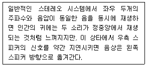
- 마스킹 효과
- 칵테일파티 효과
- 선행음 효과
- 도플러 효과
(정답률: 100%)

2. 확산음장의 특징으로 옳은 것은?
- 근음장(near field)에 속한다.
- 무향실은 확산음장이 얻어지는 공간이다.
- 위치에 따라 음압 변동이 매우 심하고 음원의 크기나 주파수, 방사면의 위상에 크게 영향을 받는다.
- 밀폐된 실내의 모든 표면에서 입사음이 거의 100% 반사된다면 실내 모든 위치에서 음에너지밀도가 일정하다.
(정답률: 62%)
3. 진동의 수용기관에 관한 설명으로 옳지 않은 것은?
- 소음의 수용기관에 비해 진동의 수용 기관은 명확하지 않은 편이다.
- 진동에 의한 물리적 자극은신경의 말단에서 수용된다.
- 동물실험에 의하면 pacinian소체가 진동의 수용기인 것으로 알려져 있다.
- 진동자극은 유스타키오관을 통하여 시상에 도달한다.
(정답률: 84%)
4. 음의 주파수에 관한 설명으로 옳지 않은 것은?
- 소음성 난청이 시작하는 주파수는 약 400Hz이다.
- 음성 주파수 범위는 약 100~4000Hz이다.
- 인간 가청 주파수 범위는 약 20~20000Hz이다.
- 회화를 이해하는데 필요한 주파수 범위는 약 300~3000Hz이다.
(정답률: 100%)
5. 인간의 청각기관에 관한 설명으로 옳지 않은 것은?
- 중이에 있는 3개의 청소골은 외이나 내이의 임피던스 매칭을 담당하고 있다.
- 달팽이관에서 실제 음파에 대한 센서부분을 담당하는 곳은 기저막에 위치한 섬모세포이다.
- 달팽이관은 약 3.5회전만큼 돌려져 있는 나선형 구조로 되어있다.
- 약 66㎜ 정동의 길이를 갖는 달팽이관에는 약 1000개에 달하는 작은 섬모세포가 분포한다.
(정답률: 84%)
6. 어느 지점의 PWL을 10분 간격으로 측정한 결과 100dB이 3회, 110dB이 3회였다면 이 지점의 평균 PWL은?
- 약 103dB
- 약 1⑤dB
- 약 107dB
- 약 109dB
(정답률: 79%)
7. 음파의 회절에 관한 설명으로 가장 적합한 것은?
- 일반적으로 파장이 크고, 장애물이 작을수록 회절이 잘된다.
- 음파의 회절은 음파가 한 매질에서 타 매질로 통과할 때 구부러지는 현상이다.
- 높은 주파수 음이 낮은 주파수 음에 비해 회절하기 쉬우므로 장애물이 있어도 높은 음은 잘 들린다.
- 기온의 역전층 중에서는 회절에 의해 파면이 아랫방향으로 꺾이므로 먼 거리에서도 잘 들리는 현상과 관계가 깊다.
(정답률: 100%)
8. 청감보정회로의 특성에 관한 설명으로 ( )에 알맞은 것은?
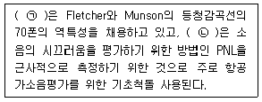
- ㉠ B 보정레벨, ㉡ C 보정레벨
- ㉠ B 보정레벨, ㉡ D 보정레벨
- ㉠ C 보정레벨, ㉡ D 보정레벨
- ㉠ D 보정레벨, ㉡ C 보정레벨
(정답률: 100%)
9. 중심주파수 750Hz일 때 1/1 옥타브밴드 분석기(정비형 필터)의 상한주파수는?
- 841Hz
- 945Hz
- 1060Hz
- 1500Hz
(정답률: 90%)
10. 다음 중 음의 전달경로로 옳은 것은?
- 외이도 - 고막 - 이소골 - 와우각
- 외이도 - 와우각 - 이관 - 이소골
- 외이도 - 이소골 - 이개 - 와우각
- 외이도 - 이관 - 고막 - 이소골
(정답률: 100%)
11. 소음에 관한 작업방해에 대한 설명으로 옳지 않은 것은?
- 소음은 작업의 정밀보다는 총 작업량이 저하되기 쉽다.
- 불규칙한 폭발음은 일정한 소음보다 더욱 위해하다.
- 특정 소음이 없는 상태에서 일정 소음이 90dB(A)를 초과하지 않으면 일반적으로 작업은 방해를 받지 않는다고 한다.
- 일반적으로 1000~2000Hz이상의 고주파역 소음은 저주파역 소음보다 작업방해를 크게 야기 시킨다.
(정답률: 73%)
12. 항공기 소음에 관한 설명으로 가장 거리가 먼 것은?
- 간헐적이며 충격적이다.
- 발생음량이 많고, 발생원이 상공이기 때문에 피해면적이 넓다.
- 구조물과 지반을 통하여 전달되는 저주파영역의 소음으로 우리나라에서는 NNL을 채택하고 있다.
- 제트기는 이착륙시 발생하는 추진계의 소음으로, 금속성의 고주파음을 포함한다.
(정답률: 82%)
13. 음향출력 10w인 점음원이 지면에 있을 때, 10m 떨어진 지점에서의 음의 세기는?
- 0.032 w/m2
- 0.016 w/m2
- 0.008 w/m2
- 0.004 w/m2
(정답률: 82%)
14. A특성과 C특성 청감보정에 대한 설명으로 옳은 것은?
- 두 특성 모두 1kHz 이하에서는 비슷하지만, 1kHz에서는 저주파에서보다 상대응답의 차가 매우 크다.
- A특성 청감보정회로는 저주파 음에너지를 많이 소거시킨다.
- C특성은 특히 낮은 음압의 소음평가에 적절하다.
- A특성은 교통소음평가에, C특성은 항공기 소음평가에 주로 이용된다.
(정답률: 59%)
15. 50 phon의 소리는 40 phon의 소리에 비해 몇 배로 크게 들리는가?
- 1배
- 2배
- 3배
- 5배
(정답률: 93%)
16. 진동의 영향에 관한 설명으로 옳은 것은?
- 4~14Hz에서 복통을 느끼고, 9~20Hz에서는 대소변을 보고 싶게 한다.
- 수직 및 수평진동이 동시에 가해지면 10배정도의 자각현상이 나타난다.
- 6Hz에서 머리는 가장 큰 진동을 느낀다.
- 20~30Hz 부근에서 심한 공진현상을 보여 가해진 진동보다 크게 느끼고, 진동수 증가에 따라 감쇠는 급격히 감소한다.
(정답률: 64%)
17. 공장에서 현장소음을 이용하여 틈이 없는 단일벽체 내측 및 외측 각 1m 위치에서 동시에 측정한 평균음압도가 각각 87dB과 54dB일 때, 이 벽체의 투과손실은?
- 33 dB
- 30dB
- 27dB
- 24dB
(정답률: 75%)
18. 용어에 관한 설명이 옳지 않은 것은?
- NNI : 항공기 소음의 척도
- NRN : 감각보정지수
- TNI : 교통소음의 척도
- SIL : 회화방해레벨
(정답률: 93%)
19. 다음 중 잔향시간 측정에 관한 설명으로 가장 거리가 먼 것은?
- 잔향시간은 재료의 흡음율을 산정하는 데 이용된다.
- 잔향시간은 실내에서 음원을 끈 순간부터 음압레벨이 60dB 감소되는데 소요되는 시간을 말한다.
- 잔향시간은 일반적으로 기록지의 레벨 감쇠곡선의 폭이 25dB 이상일 때 이를 산출한다.
- 난입사흡음율 측정법에 의한 정재파법은 일반적으로 잔향시간 측정범위가 2~5초 정도이다.
(정답률: 알수없음)
20. 무한히 긴 선음원이 있다. 이 음원으로부터 50m 거리만큼 떨어진 위치에서의 음압레벨이 93dB이라면 5m 떨어진 곳에서의 음압레벨은?
- 130 dB
- 120 dB
- 110 dB
- 103 dB
(정답률: 90%)
2과목: 소음방지기술
21. 공장의 환기 덕트에서 나가는 출구가 민가쪽으로 향해 있어서 소음이 문제가 되고 있다. 환기 덕트의 소음대책으로 옳지 않은 것은?
- 덕트 출구의 면적을 작게 한다.
- 덕트 출구의 방향을 바꾼다.
- 덕트 출구에 사이렌서를 부착한다.
- 덕트 출구 앞에 흡음덕트를 부착한다.
(정답률: 93%)
22. 다음 소음대책 중 가장 먼저 해야 할 것은?
- 문제 주파수의 발생원 탐사
- 수음점의 규제기준 확인
- 수음점의 위치 확인
- 수음점에서 실태 조사
(정답률: 100%)
23. 벽체의 투과손실이 32dB일 때, 이 벽체의 투과율은?
- 3.3×10-3
- 4.3×10-3
- 5.3×10-4
- 6.3×10-4
(정답률: 100%)
24. 자유공간에서처럼 음원으로부터 거리가 멀어짐에 따라 음압이 일정하게 감쇠되는 역2승 법칙이 성립하도록 인공적으로 만든 실은?
- 무향실
- 반무향실
- 잔향실
- 반잔향실
(정답률: 90%)
25. 실내 총 표면적이 300m2인 회의실이 있다. 이 회의실의 벽체 면적은 100m2로 흡음율이 0.5이고, 나머지 바닥과 천정의 흡음율은 각각 0.2일 때, 이 회의실이 흡음력은?
- 80m2
- 85m2
- 90m2
- 95m2
(정답률: 84%)
26. 다음 표는 각 재질의 1/3 옥타브 대역으로 측정한 중심 주파수에서의 흡음율을 나타낸 것이다. 이들 재질 중 가장 큰 감음계수를 갖는 재질은?
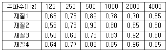
- 재질 1
- 재질 2
- 재질 3
- 재질 4
(정답률: 80%)
27. 공명형 소음기에 관한 설명으로 가장 거리가 먼 것은?
- 최대투과손실치는 공명주파수에서 일어난다.
- 작은 관내 공동 구멍수가 많을수록 공명주파수는 커진다.
- 내관의 작은 구먹과 그 배후 공기층이 공명기를 형성하여 흡음함으로써 감음한다.
- Helmholtz 공명기는 협대역 고주파 소음방지에 탁월하며, 공동내에 흡음재를 충진 시 저주파까지 거의 평탄한 감음특성을 보인다.
(정답률: 77%)
28. 소음대책 방법 중 전파경로 대책과 가장 거리가 먼 것은?
- 방음벽 설치
- 소음기 설치
- 공장건물 내벽의 흡음처리
- 공장 벽체의 차음성 강화
(정답률: 85%)
29. 발파작업은 댐이나 도로 등의 큰 건설현장에서 일어나는 소음원이다. 다음 중 발파소음의 감소대책으로 가장 거리가 먼 것은?
- 지발당 장약량을 감소시킨다.
- 전색효과가 좋은 전색물을 사용한다.
- 단발뇌관으로 분할발파 하거나 천공길이, 천공지름을 작게 한다.
- 도폭선을 사용하고, 소음원과 수음측 사이에 도랑 등을 굴착함으로서 소음을 줄일 수 있다.
(정답률: 알수없음)
30. 흡음재료의 선택 및 사용 시 유의할 점으로 옳지 않은 것은?
- 실의 모서리나 가장자리 부분에 흡음재를 부착시키면 효과가 좋아진다.
- 흡음재는 한곳에 집중하는 것보다 전체 내부에 분산하여 부착하는 것이 좋다.
- 막진동이나 판진동 흡음재는 도장을 하면 흡음율이 현저히 떨어진다.
- 유리섬유와 같은 다공질 재료는 산란되기 쉽다.
(정답률: 82%)
31. 음원실의 소음이 1000000분의 1로 에너지가 감쇠되어 수음실로 전달될 때 투과손실(TL)은?
- 60dB
- 40dB
- 20dB
- 10dB
(정답률: 70%)
32. STC값을 평가하는 절차에 관한 설명 중 ( )에 알맞은 것은?
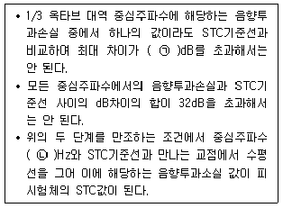
- ㉠ 3, ㉡ 500
- ㉠ 3, ㉡ 1000
- ㉠ 8, ㉡ 500
- ㉠ 8, ㉡ 1000
(정답률: 84%)
33. 소음제어를 위한 자재류의 특성에 관한 설명으로 가장 거리가 먼 것은?
- 흡음재는 일반적으로 내부통로를 가진 다공성자재이며, 차음재로는 불량이다.
- 차음재는 상대적으로 경량(8.4~55.6 kg/m2)이며, 일반적으로 공기의 출입이 용이하다.
- 흡음재는 잔향음의 에너지 저감에 사용된다.
- 차음재는 음의 투과율을 저감시킨다.
(정답률: 55%)
34. 벽면 또는 벽상단의 음향특성에 따른 방음벽 구분으로 옳지 않은 것은?
- 공조형
- 반사형
- 간섭형
- 흡음형
(정답률: 85%)
35. 방음벽 설계 시 유의할 점으로 옳지 않은 것은?
- 벽 대신에 소음원 주위에 나무를 심는 것은 소음방지에 큰 효과를 기대할 수 없다.
- 방음벽의 안쪽은 될 수 있는 한 흡음성으로 해서 반사음을 방지하는 것이 좋다.
- 음원의 지향성이 수음점 방향으로 강할 때는 방음벽에 의한 감쇠는 계산치보다 작게 된다.
- 방음벽에 의한 실용적 삽입손실치의 한계는 점음원인 경우 24~25dB, 선음원인 경우 21~22dB 정도로 본다.
(정답률: 82%)
36. 길이 4m, 폭 5m, 높이 3m인 방에서 측정한 잔향시간이 500Hz에서 0.3초 일 때, 이 방의 평균 흡음율은?
- 약 0.3
- 약 0.4
- 약 0.5
- 약 0.6
(정답률: 100%)
37. 음파가 벽면에 수직입사할 때, 단일벽의 투과손실에 관한 설명으로 옳은 것은?
- 투과손실은 주파수 및 면밀도와 무관하다.
- 벽체의 면밀도가 3배 증가할 때마다 투과손실은 3dB씩 증가한다.
- 주파수가 2배 증가할 때마다 투과손실은 3dB씩 증가한다.
- 벽체의 면밀도가 2배 증가할 때마다 투과손실은 6dB씩 증가한다.
(정답률: 91%)
38. A공장 총벽체 면적 60m2 중 콘크리트 벽체 면적 및 투과손실은 50m2, 55dB이고, 창문의 면적 및 투과 손실이 10m2, 15dB이며, 그 중 창문이 1/2정도 열려 있을 때, 벽체 전체의 투과손실은?
- 6dB
- 11dB
- 15dB
- 18dB
(정답률: 92%)
39. A시료 흡음성능 측정을 위해 정재파 관내법을 사용하여 측정한 흡음율이 0.933이었다. 이 때 1000Hz 순은의 정재파비는?
- 1.35
- 1.7
- 2.2
- 2.8
(정답률: 85%)
40. 곡물을 운송하는 배관표면에서 2차 고체음이 방사되어, 이에 방지대책으로 점탄성 제진재를 부착하고 흡음재와 차음재를 부착하고자 한다. 이러한 방법을 무엇이라고 하는가?
- 흡음대책
- 방음 LAGGING
- 밀폐상자
- SURGING
(정답률: 100%)
3과목: 소음진동 공정시험 기준
41. 소음기준 중 배경소음 측정이 필요하지 않은 것은?
- 소음환경기준
- 소음배출허용기준
- 생화소음규제기준
- 발파소음규제기준
(정답률: 64%)
42. 소음·진동 공정시험기준에서 규정하고 있는 소음계의 측정가능 소음도 범위기준은? (단, 자동차 소음을 제외한 일반적인 측정가능 소음도 범위 기준)
- 1~90dB 이상
- 20~90dB 이상
- 35~130dB 이상
- 55~90dB 이상
(정답률: 91%)
43. 배출허용기준 중 진동측정방법에서 배출시설의 진동발생원을 가능한 한 최대출력으로 가동시킨 정상상태에서 측정한 진동레벨은?
- 측정진동레벨
- 대산진동레벨
- 진동가속도레벨
- 평가진동레벨
(정답률: 85%)
44. 소음·진동공정시험기준 중 철도소음측정에 관한 설명으로 옳지 않은 것은?
- 요일별로 소음변동이 적은 평일에 측정한다.
- 주간 시간대는 2시간 간격을 두고 1시간씩 2회 측정한다.
- 철도소음관리기준을 적용하기 위하여 측정하고자 할 경우에는 철도보호지구외의 지역에서 측정·평가한다.
- 샘플주기를 0.1초 내외로 결정하고 1시간동안 연속·측정하여 자동 연산·기록한 등가소음도를 그 지점의 측정소음도로 한다.
(정답률: 70%)
45. 표준진동발생기에 대한 설명 중 ( )에 가장 알맞은 것은?
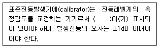
- 발생진동의 음압도와 진동레벨
- 발생진동의 음압도와 진동속도레벨
- 발생진동의 발생시간과 진동속도
- 발생진동의 주파수와 진동가속도레벨
(정답률: 91%)
46. 공장가동 시 부지경계선에서 측정한 소음도가 67dB(A)이고, 가동을 중지한 상태에 측정한 소음도가 61dB(A)일 경우 대상 소음도는?
- 63.0dB(A)
- 64.8dB(A)
- 65.7dB(A)
- 66.4dB(A)
(정답률: 91%)
47. 소음·진동 공정시험기준상 용어의 정의로 옳지 않은 것은?
- 측정소음도 : 소음 진동 공정시험기준에서 정한 측정방법으로 측정한 소음도 및 등가소음도 등을 말한다.
- 정상소음 : 시간적으로 변동하지 아니하거나 또는 변동 폭이 작은 소음을 말한다.
- 지발발파 : 수분 내에 시간차를 두고 발파하는 것을 말한다.
- 지시치 : 계기나 기록지 상에서 판독한 소음도로서 실효치(rms값)를 말한다.
(정답률: 알수없음)
48. 공장진동 측정자료 평가표 서식에 기재되어야 하는 사항으로 거리가 먼 것은?
- 충격진동 발생시간(h)
- 측정 대상업소 소재지
- 진동레벨계 명칭
- 지면조건
(정답률: 82%)
49. 청감보정회로 및 소음계의 동특성을 “A특성-느림(slow)” 조건으로 하여 측정해야 하는 소음은?
- 생활소음
- 발파소음
- 도로교통소음
- 항공기소음
(정답률: 알수없음)
50. 소음계의 구성순서로 옳은 것은?
- 마이크로폰 - 증폭기 - 레벨레인지 변환기 - 청감보정회로 - 지시계기
- 마이크로폰 - 청감보정회로 - 레벨레인지 변환기 -증폭기 -지시계기
- 마이크로폰 - 레벨레인지 변환기 - 증폭기 - 청감보정회로 - 지시계기
- 마이크로폰 -증폭기 - 청감보정회로 - 레벨레인지 변환기- 지시계기
(정답률: 82%)
51. 소음한도 중 항곡기소음의 측정자료 분석 시 배경소음보다 10dB 이상 큰 항공기소음의 지속시간 평균치
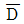
가 63초 일 경우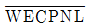
에 보정해야 할 보정량(dB)은?- 4
- 5
- 6
- 7
(정답률: 67%)
52. 소음계의 청감보정회로에서 자동차 소음 측정용은 A특성 외에 어떤 특성도 함께 갖추어야 하는가?
- B특성
- C특성
- E특성
- F특성
(정답률: 85%)
53. 공장의 부지경계선에서 측정한 진동레벨이 각지점에서 각각 62dB(V), 65dB(V), 68dB(V), 71dB(V), 64dB(V), 67dB(V)이다. 이 공장의 측정진동레벨은?
- 66dB(V)
- 68dB(V)
- 69dB(V)
- 71dB(V)
(정답률: 54%)
54. 마이크로폰을 소음계와 분리시켜 소음을 측정할 때 마이크로폰의 지지장치로 사용하거나 소음계를 고정할 때 사용하는 장치는?
- calibration network calibrator
- fast-slow switch
- tripod
- meter
(정답률: 84%)
55. 진동레벨계의 성능기준으로 옳지 않은 것은?
- 측정가능 주파수 범위는 1~90Hz 이상이어야 한다.
- 지시계기의 눈금오파 범위는 1dB이내이어야 한다.
- 측정가능 진동레벨 범위는 45~120dB이상이어야 한다.
- 레벨렌지 변환기가 있는 기기에 있어서 레벨렌지 변환기의 전환오차가 0.5dB이내이어야 한다.
(정답률: 82%)
56. 진동배출하용기준 측정시 측정기기의 사용 및 조작에 관한 설명으로 거리가 먼 것은?
- 진동레벨기록기가 없는 경우에는 진동레벨계만으로 측정할 수 있다.
- 진동레벨계의 출려단자와 진동레벨기록기의 입력단자를 연결한 후 전원과 기기의 동작을 점검하고 매회 교정을 실시하여야 한다.
- 진동레벨계의 레벨렌지 변환기는 측정지점의 진동레벨을 예비조사한 후 적절하게 고정시켜야 한다.
- 출력단자의 연결선은 회절음을 방자하기 위하여 지표면에 수직으로 설치하여야 한다.
(정답률: 64%)
57. 소음계에 의한 소음도 측정 시 반드시 마이크로폰에 방풍망을 부착하여 측정하여야 하는 경우는 풍속이 최소 얼마 이상일 때인가? (단, 상시측정용 옥외마이크로폰 제외)
- 10m/s
- 6m/s
- 2m/s
- 0.5m/s
(정답률: 100%)
58. 측정진동레벨이 65dB(V)이고 배경진동이 54B(V)이었다면 대상진동레벨은?
- 54dB(V)
- 62dB(V)
- 64dB(V)
- 65dB(V)
(정답률: 82%)
59. 규제기준 중 생활진동 측정방법으로 옳지 않은 것은?
- 피해가 예상되는 적절한 측정시각에 2지점이상의 측정지점수를 선정·측정하여 산술평균한 진동레벨을 측정진동레벨로 한다.
- 측정점은 피해가 예상되는 자의 부지경계선 중 진동레벨이 높을 것으로 예상되는 지점을 택하여야 하며 배경진동의 측정점은 동일한 장소에서 원칙으로 한다.
- 측정진동레벨은 대상 진동발생원의 일상적인 사용상태에서 정상적으로 가동시켜 측정하여야 한다.
- 배경진동레벨은 대상진동원의 가동을 중지한 상태에서 측정하여야 하나, 가동중지가 어렵다고 인정되는 경우에는 배경진동의 측정없이 측정진동레벨을 대상진동레벨로 할 수 있다.
(정답률: 59%)
60. 도로교통진동한도 측정을 위해 디지털 진동자동분석계를 사용하는 경우 측정자료 분석 방법으로 옳은 것은?
- 샘플주기를 1초 이내에서 결정하고 5분 이상 측정하여 구간 최대치로부터 10개를 산술평균한 값을 그 지점의 측정진동레벨로 한다.
- 샘플주기를 0.1초 이내에서 결정하고 5분 이상 측정하여 구간 최대치로부터 10개를 산술평균한 값을 그 지점의 측정진동레벨로 한다.
- 샘플주기를 1초 이내에서 결정하고 5분 이상 측정하여 자동 연산·기록한 80%범위의 상단치인 L10값을 그 지점의 측정진동레벨로 한다.
- 샘플주기를 0.1초 이내에서 결정하고 5분 이상 측정하여 자동 연산·기록한 80%범위의 상단치인 L10값을 그 지점의 측정진동레벨로 한다.
(정답률: 93%)
4과목: 진동방지기술
61. 비감쇠 강제진동에서 계에서 발생하는 진동이 기초로 전달이 되는 전단율을 구하는 수식으로 틀린 것은? (단,
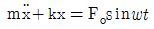
, fn=고유주파수, wn=각유각진동수)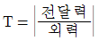
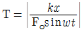
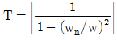
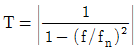
(정답률: 63%)
62. 각진동수가 600rpm인 조화운동의 주기는?
- 0.1초
- 0.2초
- 0.5초
- 1초
(정답률: 92%)
63. 용수철 정수가 125kg/cm, 용수철의 질량이 5kg일 때 용수철 고유진동수에 해당하지 않는 것은?
- 2.5
- 3
- 5
- 10
(정답률: 67%)
64. 그림과 같은 진동계에서 질량 5kg, 스프링정수 5000N/m 이다. 초기 진폭 후에 다음 진폭이 초기 진폭의 1/2로 될 때 감쇠계수 c는?
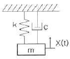
- 약 0.1N·sec/m
- 약 0.7N·sec/m
- 약 34.7N·sec/m
- 약 316.2N·sec/m
(정답률: 46%)
65. 지반 진동파의 특징으로 옳지 않은 것은?
- 종파(P파)와 횡파(S파)는 체적파에 속한다.
- 표면파의 에너지 거리감쇠율은 거리의 제곱에 반비례한다.
- 지반 진동파가 전파될 때 에너지의 양(비율)은 일반적으로 R파 > S파 > P파의 순이다.
- S파와 P파의 도달 시간차이를 PS시라 하며, PS시를 이용하여 진원거리를 알 수 있다.
(정답률: 알수없음)
66. 방진재료로 금속스프링을 사용하는 경우 로킹모션(rocking motion)이 발생하기 쉽다. 이를 억제하기 위한 방법으로 틀린 것은?
- 기계 중량의 1~2배 정도의 가대를 부착한다.
- 하중을 평형분포 시킨다.
- 스프링의 정적 수축량이 일정한 것을 사용한다.
- 길이가 긴 스프링을 사용하여 계의 무게중심을 높인다.
(정답률: 100%)
67. 코일 스프링에서 스프링 정수에 관한 설명으로 옳은 것은?
- 스프링 재료의 직경에 비례한다.
- 스프링 재료의 직경에 제곱에 비례한다.
- 스프링 재료의 직경에 3제곱에 비례한다.
- 스프링 재료의 직경에 4제곱에 비례한다.
(정답률: 91%)
68. 다음 그림과 같은 계에서 X1 = 3cos4t 일 때 X의 정상상태 진폭이 2였다. 스프링 상수 k값은?
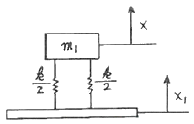
- 6.4m1
- 10.12m1
- 10.67m1
- 24.00m1
(정답률: 50%)
69. 회전속도 2500rpm의 원심팬을 방진고무로 탄성지지시켜 진동전달율을 0.185로 할 때 방진고무의 정적수축량은?
- 0.09cm
- 0.18cm
- 0.21cm
- 0.34cm
(정답률: 84%)
70. 기계를 기초대 위에 완전히 고정시켜 설치하고 운전했더니 진동이 크게 되어서 기계의 상면 높이가 998㎜에서 1002㎜사이를 매분 240회로 흔들리는 것을 알았다면, 이 기계의 진동가속도 레벨은?
- 약 97dB
- 약 99dB
- 약 101dB
- 약 103dB
(정답률: 79%)
71. 기초 구조물을 방진설계 시 내진, 면진, 제진 측면에서 볼 때 “내진설계”에 대한 설명으로 옳은 것은?
- 지진하중과 같은 수평하중을 견디도록 구조물의 강도를 증가시켜 진동을 저감하는 방법
- 지진 하중에 대한 반대되는 방향으로 인위적인 진동을 가하여 진동을 상쇄시키는 방법
- 스프링, 고무 등으로 구조물을 지지하여 진동을 저감하는 방법
- 에너지 흡수기와 같은 진동 저감장치를 이용하여 진동을 저감하는 방법
(정답률: 80%)
72. 진동계를 전기계로 대치할 때의 상호 관계로 옳은 것은?
- 질량(m) = 전류(i)
- 변위(x) = 임피던스(L)
- 힘(F) = 전압(E)
- 스프링정수(K) = 전기속도(R)
(정답률: 79%)
73. 그림과 같이 외팔보의 끝에 질량 m이 달려있다. 외팔보의 질량을 mb라 할 때 계의 등가스프링상수 k로 옳은 것은?
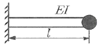
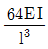
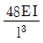
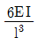
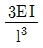
(정답률: 91%)
74. 시간(t)에 따른 변위량(진폭)의 변화 그래프 중 부족감쇠 자유진동을 나타내는 것은?
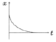
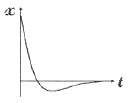
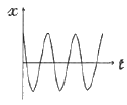
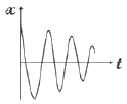
(정답률: 100%)
75. 진동에 의한 기계에너지를 열에너지로 변화시키는 기능을 무엇이라 하는가?
- 자유진동
- 모멘트
- 스프링
- 감쇠
(정답률: 92%)
76. 공기스프링의 장·단점으로 가장 거리가 먼 것은?
- 압축기 등 부대시설이 필요하다.
- 내부 감쇠저항이 크므로 추가적인 감쇠장치가 불필요하다.
- 하중의 변화에 따라 고유진동수를 일정하게 유지시킬 수 있다.
- 설계시에 비교적 자유스럽게 스프링 높이, 스프링정수, 내하력 등을 선택할 수 있다.
(정답률: 100%)
77. 방진고무에 관한 설명으로 가장 거리가 먼 것은?
- 내부마찰에 의한 발열 때문에 열화가능성이 크다.
- 교유진동수가 강제진동수의 1/3 이하인 것을 택한다.
- 동적배율(정적스프링 정수에 대한 도정스프링 정수의 비)이 보통 1보다 작다.
- 압축, 전단 등의 사용방법에 따라 1개로 2축 방향 및 회전방향의 스프링 정수를 광범위하게 선택할 수 있다.
(정답률: 91%)
78. 주파수 5Hz의 표면파(n = 0.5)가 전파속도 100m/s로 지반의 내부 감쇠정수 0.⑤의 지반을 전파할 때 진동원으로부터 20m 떨어진 지점의 진동레벨은? (단, 진동원에서 5m 떨어진 지점에서의 진동레벨은 80dB이다)
- 약 66dB
- 약 69dB
- 약 72dB
- 약 75dB
(정답률: 알수없음)
79. 정현진동에서 진동속도의 시간적 변화를 나타내는 진동가속도로 옳은 것은? (단, α : 진동가속도)
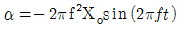
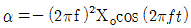
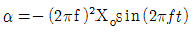
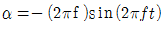
(정답률: 79%)
80. 진동의 속도를 표시하는 단위인 kine의 물리적인 단위는?
- m/s
- cm/s
- mm/s
- ㎛/s
(정답률: 100%)
5과목: 소음진동 관계 법규
81. 소음·진동관리법상 운행차의 개선명령에 관한 설명 중 ( )안에 알맞은 것은?
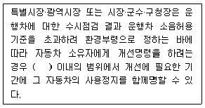
- 7일
- 10일
- 15일
- 30일
(정답률: 64%)
82. 시·도지사가 측정망설치계획을 결정·고시 하려는 경우 그 설치위치 등에 관하여 누구의 의견을 들어야 하는가?
- 환경부장관
- 환경관리청장
- 지방환경관리청장
- 시장·군수·구청장
(정답률: 알수없음)
83. 소음·진동관리법상 소음발생 건설기계의 종류에 포함되지 않는 것은?
- 정격출력 75kw의 굴삭기
- 중량 500kg의 휴대용 브레이커
- 고정식 공기압축기
- 천공기
(정답률: 86%)
84. 배기소음허용기준을 초과한 자동차로 소음기 또는 소음덮개를 훼손하거나, 떼어버린 경우 1차위반 시 부과되는 과태료는?
- 150만원
- 100만원
- 60만원
- 10만원
(정답률: 45%)
85. 자동차의 소유자가 배기소음 허용기준을 2dB(A)이상 4dB(A)미만 초과한 경우 1차 위반시의 과태료는?
- 20만원 이하
- 40만원 이하
- 60만원 이하
- 80만원 이하
(정답률: 55%)
86. 소음·진동관리법령상의 인증을 면제할 수 있는 자동차와 가장 거리가 먼 것은?
- 여행자 등이 다시 반출할 것을 조건으로 일시 반입하는 자동차
- 주한 외국공관이 공무용으로 사용하기 위하여 반입하는 자동차로서 외교부장관의 확인을 바은 자동차
- 국제협약 등에 의하여 인증을 면제할 수 있는 자동차
- 자동차제작자가 자동차의 개발이나 전시 등을 목적으로 사용하는 자동차
(정답률: 82%)
87. 소음·진동관리법규상 방진시설로 가장 거리가 먼 것은?
- 방진덮개시설
- 방진구시설
- 제진시설
- 배관진동 절연장치
(정답률: 알수없음)
88. 전국적인 소음진동의 실태를 파악하기 위하여 측정망을 설치하고 상시 측정하여야 하는 자는?
- 대통령
- 환경부장관
- 시도지사
- 국회의원
(정답률: 64%)
89. 소음·진동관리법상 과태료 부과 대상으로 옳지 않은 것은?
- 부정한 방법으로 신고를 하고 소음진동 배출시설을 설치한 자
- 생활소음·진동의 규제기준을 초과하여 소음·진동을 발생한 자
- 소음·진동관리법 제19조제1항을 위반하여 환경기술인을 임명하지 아니한 자
- 소음·진동관리법 제24조제1항에 따른 이동소음원의 사용금지 또는 제한조치를 위반한 자
(정답률: 50%)
90. 소음·진동관리법상 이 법에서 사용하는 용어의 뜻으로 옳지 않은 것은?
- “소음발생건설기계”란 건설공사에 사용하는 기계 중 소음이 발생하는 기계로서 환경부령으로 정하는 것을 말한다.
- “소음·진동방지시설”이란 소음·진동배출시설로부터 배출되는 소음·진동을 없애거나 줄이는 시설로서 환경부령으로 정하는 것을 말한다.
- “교통기관”이란 기차·자동차·도로 및 철도 등을 말한다. 다만, 항공기와 전차는 제외한다.
- “진동(振動)”이란 기계·기구·시설, 그 밖의 물체의 사용으로 인하여 발생하는 강한 흔들림을 말한다.
(정답률: 91%)
91. 소음·진동관리법상 배출허용기준 준수 의무에 관한 사항이다. 밑줄 친 기간(기준)에 가장 알맞은 것은?
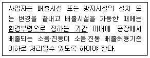
- 가동개시일
- 가동개시일부터 30일
- 가동개시일부터 60일
- 가동개시일부터 90일
(정답률: 84%)
92. 소음·진동관리법상 소음·진동 배출시설 설치 시 허가를 받아야 하는 지역으로서 “대통령령으로 정하는 지역” 기준으로 거리가 먼 것은?
- 의료법 규정에 따른 종합병원의 부지경계선으로부터 직선거리 50미터 이내의 지역
- 도서관법 규정에 따른 공공도서관의 부지경계선으로부터 직선거리 50미터 이내의 지역
- 초·중등교육법 및 고등교육법 규정에 따른 학교의 부지경계선으로부터 직선거리 50미터 이내의 지역
- 주택법 규정에 따른 단독주택의 부지경계선으로부터 직선거리 50미터 이내의 지역
(정답률: 80%)
93. 소음·진동관리법규상 관리지역 중 산업개발진흥지구에서의 낮 시간대 공공소음 배출허용 기준은 65dB(A) 이하이다. 동일한 조건에서 충격음이 포함되어 있는 경우 보정치를 감안한 허용기준치로 옳은 것은? (단, 기타 조건은 고려하지 않는다.)
- 60dB(A) 이하
- 70dB(A) 이하
- 75dB(A) 이하
- 80dB(A) 이하
(정답률: 50%)
94. 소음·진동관리법상 제작차 소음허용기준에 맞지 아니하게 자동차를 제작한 자에 대한 벌칙기준은?
- 6개월 이하의 징역 또는 500만원 이하의 벌금
- 1년 이하의 징역 또는 1천만원 이하의 벌금
- 2년 이하의 징역 또는 1천만원 이하의 벌금
- 3년 이하의 징역 또는 3천만원 이하의 벌금
(정답률: 75%)
95. 소음도 표지에 대한 설명 중 옳지 않은 것은?
- 크기는 80×80㎜로 한다.
- 기계별로 눈에 잘 띄고 작업으로 인한 훼손이 되지 아니하는 위치에 부착한다.
- 쉽게 훼손되지 않는 금속성이나 이와 유사한 강동의 재질이어야 한다.
- 노란색 판에 검은색 문자를 사용한다.
(정답률: 84%)
96. 소음·진동관리법에 의해 자동차 소유자에게 개선을 명할 수 있는 경우가 아닌 것은?
- 브레이크 작동소음이 발생하는 경우
- 소음기나 소음덮개를 떼어 버린 경우
- 경음기를 추가로 붙인 경우
- 운행차의 소음이 운행차 소음허용기준을 초과한 경우
(정답률: 알수없음)
97. 소음·진동관리법규상 환경기술인의 관리사항으로 가장 거리가 먼 것은?
- 배출시설과 방지시설의 관리에 관한 사항
- 배출시설과 방지시설의 개선에 관한 사항
- 배출시설과 방지시설의 설치도면 작성에 관한 사항
- 그 밖에 소음·진동을 방지하기 위하여 시장·군수·구청장이 지시하는 사항
(정답률: 60%)
98. 주거지역에 대한 철도 교통소음의 규제는 부지경계선으로부터 몇 m 이내 지역에 해당되나?
- 30m
- 50m
- 100m
- 200m
(정답률: 46%)
99. 소음·진동관리법규상 특정공사의 사전신고 대상 기계·장비의 종류에 해당되지 않는 것은?
- 굴삭기
- 브레이커(휴대용을 포함)
- 압쇄기
- 압입식 항타항발기
(정답률: 74%)
100. 소음·진동관리법규상 공사장 방음시설 설치기준 중 방음벽 높이의 기준은?
- 1m 이상 되어야 한다.
- 1.5m 이상 되어야 한다.
- 3m 이상 되어야 한다.
- 10m 이상 되어야 한다.
(정답률: 91%)